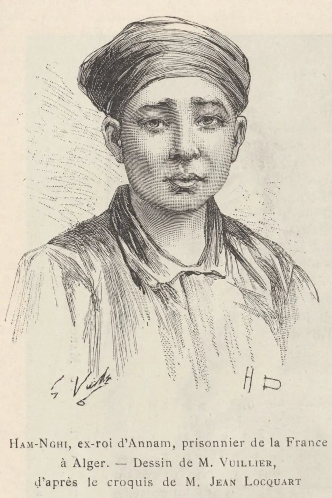
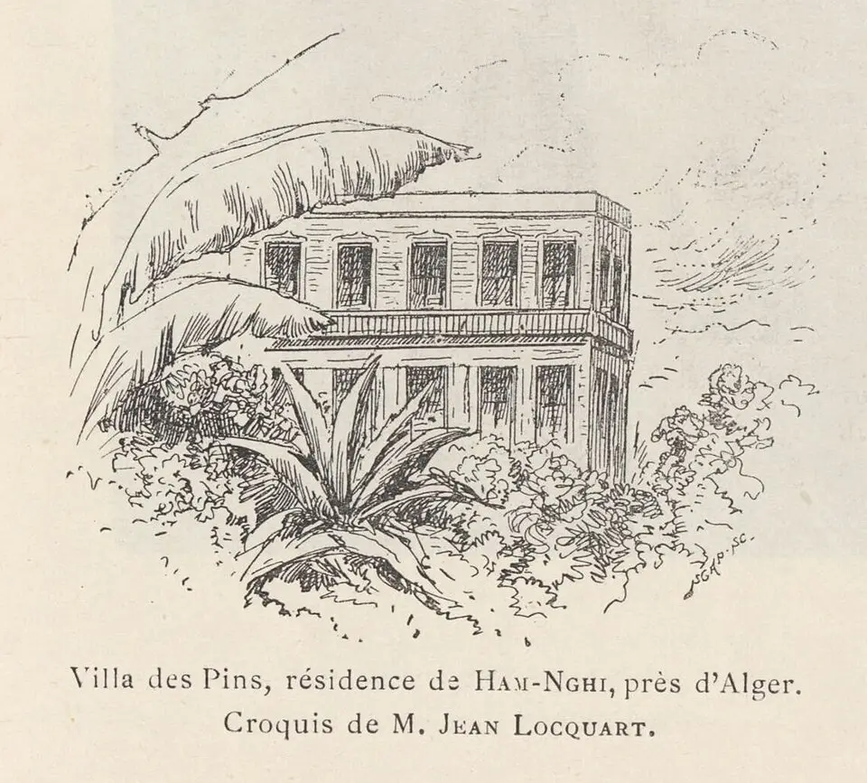
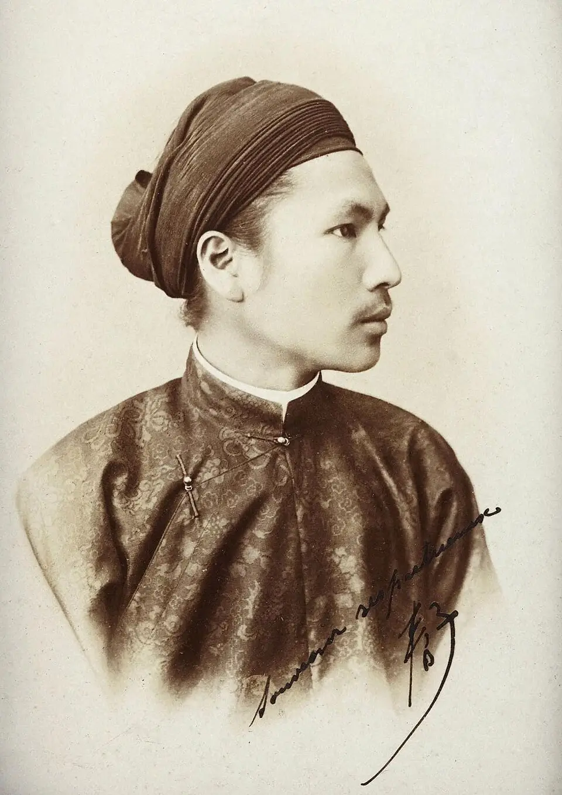
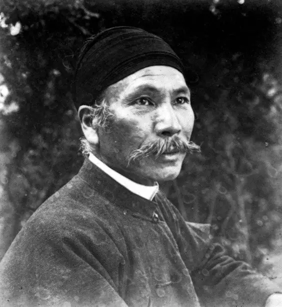

Hàm Nghi: ông vua lưu đày cầm cọ ở Alger
Bị Pháp đưa sang Algérie năm 1889, cựu hoàng Hàm Nghi học vẽ với một họa sĩ ở Alger, học điêu khắc trong xưởng Rodin và bày tranh ở Paris dưới tên Tử Xuân. Gần tám mươi năm sau khi ông mất, tranh của ông mới trở lại bảo tàng và nhà đấu giá.

Chiều 13 tháng 1 năm 1889, một chàng trai khoảng 17 tuổi bước xuống cảng Alger, người còn yếu vì sốt rét. Đó là Hàm Nghi, vị vua nhà Nguyễn từng rời kinh thành Huế năm 1885 để kêu gọi chống Pháp, bị bắt cuối năm 1888 và bị đưa sang Bắc Phi. Ông sẽ sống ở Algérie hơn năm mươi năm, đến khi mất. Trong khoảng thời gian ấy, người tù chính trị này trở thành một họa sĩ và nhà điêu khắc có tranh bày ở Paris.
Một ông hoàng học vẽ
Theo Wikipedia tiếng Việt, mười ngày đầu ông ở khách sạn de la Régence, rồi được chuyển lên Villa des Pins, tức biệt thự Rừng thông, ở làng El Biar, cách trung tâm Alger khoảng 5 km. Ông bị quản thúc và có một sĩ quan Pháp theo dõi thường xuyên. Bộ Thuộc địa trả cho ông một khoản trợ cấp hằng năm, Wikipedia ghi là 25.000 franc.
Ông học tiếng Pháp và học vẽ. Theo Asian Art Newspaper, viên sĩ quan giám sát nhìn thấy các bức vẽ của ông và mời họa sĩ Marius Reynaud (1860-1935) đến dạy mỗi tuần hai buổi. Reynaud sinh ở Marseille, sống ở Algérie và nổi tiếng với tranh cảng Alger. Ông dạy cậu học trò vẽ theo lối Đông phương, ra ngoài trời vẽ trực tiếp. Các nguồn đều lấy năm 1889 làm năm Hàm Nghi bắt đầu học mỹ thuật. Mười năm sau, cậu học trò ấy được phép sang Paris.
Ông không ký tên vua. Ông ký Tử Xuân, nghĩa là "con của mùa xuân", vốn là tên gọi thời nhỏ.
Tử Xuân ở Paris


Năm 1899, Hàm Nghi được phép sang Pháp. Cũng năm đó ông gặp Auguste Rodin và vào xưởng của Rodin ở Paris học cách nặn, đúc khuôn, làm lớp patin trên đồng. Theo Asian Art Newspaper, hai người còn thư từ qua lại đến năm 1910.
Tranh của ông chủ yếu là phong cảnh Algérie: khu vườn nhà, cổng La Mã ở Timgad, tàn tích Constantine, rừng cọ, cây ô liu. Tranh ít khi có người. Phong cách đi dần từ lối Đông phương sang Ấn tượng rồi Hậu ấn tượng. Từ năm 1904, sau khi xem tranh Paul Gauguin ở Paris, ông dùng màu đậm hơn và mặt phẳng dẹt hơn.
Ông không ký tên vua. Ông ký Tử Xuân, nghĩa là "con của mùa xuân", vốn là tên gọi thời nhỏ. Tháng 6 năm 1904, mười bức tranh phấn màu của ông được bày ở nhà tròn Bảo tàng Guimet. Tháng 11 năm 1911, ông bày tranh ở phòng tranh Mantelet. Tháng 11 năm 1926, phòng tranh Mantelet-Colette Weil mở một cuộc triển lãm tổng kết với 38 tranh sơn dầu, 12 tranh phấn màu và 8 tượng đồng.
Cũng năm 1904, ngày 4 tháng 11, ông cưới Marcelle Laloë (1884-1974), con gái chánh án tòa thượng thẩm Alger. Hai người có ba con: Như Mai, Như Lý và Minh Đức. Gia đình sống trong ngôi nhà kiểu tân Moorish do ông cho xây ở El Biar, gọi là biệt thự Gia Long. Ông mất tại đó ngày 14 tháng 1 năm 1944, thọ 72 tuổi.
Bằng chứng nói gì


Sau khi ông mất, tranh của Tử Xuân gần như bị quên. Phần lớn nằm trong tay gia đình và tư nhân. Theo Wikipedia, nhiều tác phẩm đã cháy trong một vụ hỏa hoạn năm 1964, và ngày nay người ta biết khoảng 100 bức tranh và tượng.
Người đưa chúng trở lại là Amandine Dabat, hậu duệ đời thứ năm của ông và là nhà sử học nghệ thuật. Bà dựa vào khoảng 2.500 tài liệu gia đình cùng hồ sơ ở Pháp, Việt Nam và Algérie để viết luận án tiến sĩ tại Paris-Sorbonne, in thành sách năm 2019. Từ 19 tháng 3 đến 26 tháng 6 năm 2022, Bảo tàng Nghệ thuật châu Á ở Nice mở triển lãm "L'Art en exil" với hơn 150 tác phẩm, đồ vật, thư từ và tài liệu.
Thị trường cũng tìm đến. Ngày 24 tháng 11 năm 2010, bức "Déclin du jour" được bán ở Paris với giá 8.800 euro. Ngày 22 tháng 9 năm 2023, 19 bức tranh được bán tại Drouot với tổng khoảng 330.000 euro, bức cao nhất 38.000 euro. Theo VnExpress, số tranh này suýt bị bỏ đi trước khi được nhận ra nhờ chữ ký và một tấm bưu thiếp gửi trung tá Henri Aubé, người phụ trách ngành địa chất Đông Dương ở Hà Nội. Năm 2024, gia đình tặng Bảo tàng Mỹ thuật Việt Nam bức sơn dầu "Les Collines de Deli Ibrahim (Alger)" vẽ năm 1908.
Dabat cho rằng Hàm Nghi là họa sĩ Việt Nam hiện đại đầu tiên, vì ông học vẽ từ năm 1889, sớm hơn Lê Văn Miến khoảng mười năm. Một số nhà nghiên cứu dè dặt hơn với nhận định này. Các nguồn cũng chưa thống nhất vài chi tiết nhỏ, như cuộc triển lãm tổng kết diễn ra năm 1926 hay 1927. Điều chắc chắn là vị vua mất ngai năm 1885 đã để lại một sự nghiệp hội họa thật, ký bằng một cái tên khác.
